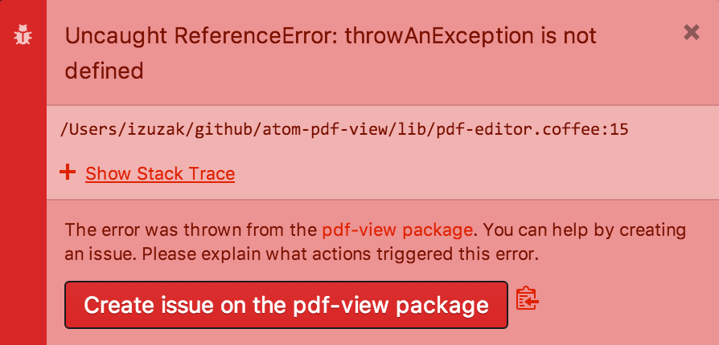
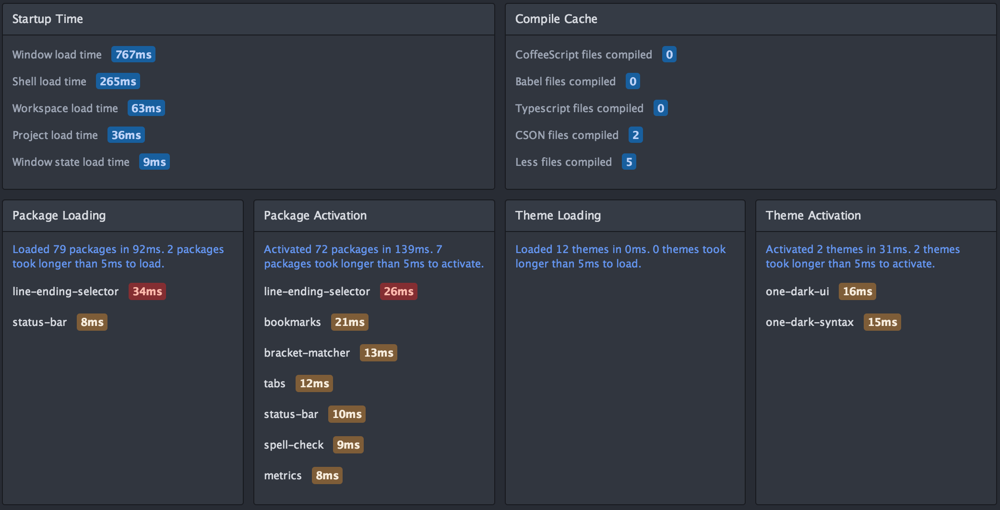
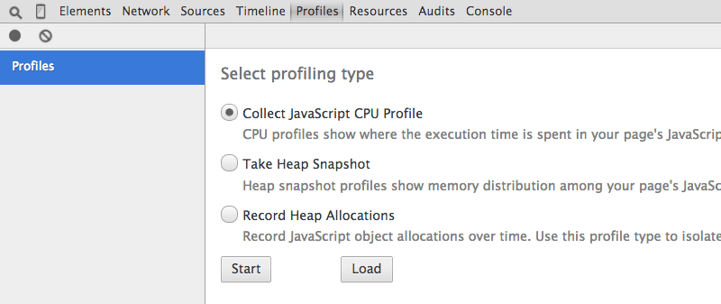
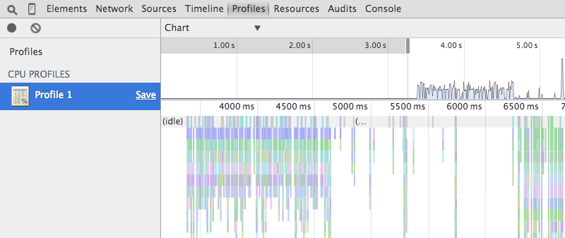

Chapter 1: Getting Started
Chapter 2: Using Atom
- Atom Packages
- Moving in Atom
- Atom Selections
- Editing and Deleting Text
- Find and Replace
- Snippets
- Autocomplete
- Folding
- Panes
- Pending Pane Items
- Grammar
- Version Control in Atom
- GitHub package
- Writing in Atom
- Basic Customization
- Summary
Chapter 3: Hacking Atom
- Tools of the Trade
- The Init File
- Package: Word Count
- Package: Modifying Text
- Package: Active Editor Info
- Creating a Theme
- Creating a Grammar
- Creating a Legacy TextMate Grammar
- Publishing
- Iconography
- Debugging
- Writing specs
- Handling URIs
- Cross-Platform Compatibility
- Converting from TextMate
- Hacking on Atom Core
- Contributing to Official Atom Packages
- Creating a Fork of a Core Package in atom/atom
- Maintaining a Fork of a Core Package in atom/atom
- Summary
Chapter 4: Behind Atom
- Configuration API
- Keymaps In-Depth
- Scoped Settings, Scopes and Scope Descriptors
- Serialization in Atom
- Developing Node Modules
- Interacting With Other Packages Via Services
- Maintaining Your Packages
- How Atom Uses Chromium Snapshots
- Summary
Reference: API
- AtomEnvironment
- BufferedNodeProcess
- BufferedProcess
- Clipboard
- Color
- CommandRegistry
- CompositeDisposable
- Config
- ContextMenuManager
- Cursor
- Decoration
- DeserializerManager
- Directory
- DisplayMarker
- DisplayMarkerLayer
- Disposable
- Dock
- Emitter
- File
- GitRepository
- Grammar
- GrammarRegistry
- Gutter
- HistoryManager
- KeymapManager
- LayerDecoration
- MarkerLayer
- MenuManager
- Notification
- NotificationManager
- Package
- PackageManager
- Pane
- Panel
- PathWatcher
- Point
- Project
- Range
- ScopeDescriptor
- Selection
- StyleManager
- Task
- TextBuffer
- TextEditor
- ThemeManager
- TooltipManager
- ViewRegistry
- Workspace
- WorkspaceCenter
Appendix A: Resources
Appendix B: FAQ
- Is Atom open source?
- What does Atom cost?
- What platforms does Atom run on?
- How can I contribute to Atom?
- Why does Atom collect usage data?
- Atom in the cloud?
- What's the difference between an IDE and an editor?
- How can I tell if subpixel antialiasing is working?
- Why is Atom deleting trailing whitespace? Why is there a newline at the end of the file?
- What does Safe Mode do?
- I have a question about a specific Atom community package. Where is the best place to ask it?
- I’m using an international keyboard and keys that use AltGr or Ctrl+Alt aren’t working
- I’m having a problem with Julia! What do I do?
- I’m getting an error about a “self-signed certificate”. What do I do?
- I’m having a problem with PlatformIO! What do I do?
- How do I make Atom recognize a file with extension X as language Y?
- How do I make the Welcome screen stop showing up?
- How do I preview web page changes automatically?
- How do I accept input from my program or script when using the script package?
- I am unable to update to the latest version of Atom on macOS. How do I fix this?
- I’m trying to change my syntax colors from styles.less, but it isn’t working!
- How do I build or execute code I've written in Atom?
- How do I uninstall Atom on macOS?
- macOS Mojave font rendering change
- Why does macOS say that Atom wants to access my calendar, contacts, photos, etc.?
- How do I turn on line wrap?
- The menu bar disappeared, how do I get it back?
- How do I use a newline in the result of find and replace?
- What is this line on the right in the editor view?
Appendix C: Shadow DOM
Appendix D: Upgrading to 1.0 APIs
Appendix E: Atom server-side APIs
Improve this page
Debugging
Atom provides several tools to help you understand unexpected behavior and debug problems. This guide describes some of those tools and a few approaches to help you debug and provide more helpful information when submitting issues:
Update to the Latest Version
You might be running into an issue which was already fixed in a more recent version of Atom than the one you're using.
If you're using a released version, check which version of Atom you're using:
atom --version Atom : 1.8.0 Electron: 0.36.8 Chrome : 47.0.2526.110 Node : 5.1.1
Then check for the latest Stable version.
If there is a more recent release available, you can update to the most recent release with the auto-update functionality built in to Atom and the about package. You can open the About View by using the Atom > About menu option to see whether Atom is up-to-date, downloading a new update or click the button to "Restart and Install Update".
If there is a more recent release available, you can update to the most recent release with the auto-update functionality built in to Atom and the about package. You can open the About View by using the Help > About menu option to see whether Atom is up-to-date, downloading a new update or click the button to "Restart and Install Update".
To update to the latest version, you can download it from the atom.io website or the latest release on GitHub and follow the Installation instructions for Atom on Linux.
If you're building Atom from source, pull down the latest version of master and re-build.
Using Safe Mode
A large part of Atom's functionality comes from packages you can install. Atom will also execute the code in your init script on startup. In some cases, these packages and the code in the init script might be causing unexpected behavior, problems, or performance issues.
To determine if that is happening, start Atom from the terminal in safe mode:
atom --safe
This starts Atom, but does not load packages from ~/.atom/packages or ~/.atom/dev/packages and disables loading of your init script. If you can no longer reproduce the problem in safe mode, it's likely it was caused by one of the packages or the init script.
If removing or commenting out all content from the init script and starting Atom normally still produces the error, then try figuring out which package is causing trouble. Start Atom normally again and open the Settings View with Cmd+,Ctrl+,. Since the Settings View allows you to disable each installed package, you can disable packages one by one until you can no longer reproduce the issue. Restart Atom or reload Atom with Alt+Cmd+Ctrl+LCtrl+Shift+F5 after you disable each package to make sure it's completely gone.
When you find the problematic package, you can disable or uninstall the package. We strongly recommend creating an issue on the package's GitHub repository. The Atom FAQ has information on how to contact the maintainers of any Atom community package or theme.
Clearing Saved State
Atom saves a number of things about your environment when you exit in order to restore Atom to the same configuration when you next launch the program. In some cases the state that gets saved can be something undesirable that prevents Atom from working properly. In these cases, you may want to clear the state that Atom has saved.
 Danger: Clearing the saved state permanently destroys any state that Atom has saved across all projects. This includes unsaved changes to files you may have been editing in all projects. This is a destructive action.
Danger: Clearing the saved state permanently destroys any state that Atom has saved across all projects. This includes unsaved changes to files you may have been editing in all projects. This is a destructive action.
Clearing the saved state can be done by opening a terminal and executing:
atom --clear-window-state
Reset to Factory Defaults
In some cases, you may want to reset Atom to "factory defaults", in other words clear all of your configuration and remove all packages. This can easily be done by opening a terminal and executing:
mv ~/.atom ~/.atom-backup
mv ~/.atom ~/.atom-backup
rename %USERPROFILE%\.atom .atom-backup
Once that is complete, you can launch Atom as normal. Everything will be just as if you first installed Atom.
Tip: The command given above doesn't delete the old configuration, just puts it somewhere that Atom can't find it. If there are pieces of the old configuration you want to retrieve, you can find them in the ~/.atom-backup%USERPROFILE%\.atom-backup directory.
Check for Linked Packages
If you develop or contribute to Atom packages, there may be left-over packages linked to your ~/.atom/packages or ~/.atom/dev/packages directories. You can use the apm links command to list all linked packages:
apm links /Users/octocat/.atom/dev/packages (0) └── (no links) /Users/octocat/.atom/packages (1) └── color-picker -> /Users/octocat/github/color-picker
You can remove links using the apm unlink command:
apm unlink color-picker Unlinking /Users/octocat/.atom/packages/color-picker ✓
See apm links --help and apm unlink --help for more information on these commands.
Tip: You can also use apm unlink --all to easily unlink all packages and themes.
Check for Incompatible Packages
If you have packages installed that use native Node modules, when you upgrade to a new version of Atom, they might need to be rebuilt. Atom detects this and through the incompatible-packages package displays an indicator in the status bar when this happens.

If you see this indicator, click it and follow the instructions.
Check Atom and Package Settings
In some cases, unexpected behavior might be caused by settings in Atom or in one of the packages.
Open Atom's Settings View with Cmd+,Ctrl+,, the Atom > PreferencesFile > PreferencesEdit > Preferences menu option, or the "Settings View: Open" command from the Command Palette.

Check Atom's settings in the Settings View, there's a description of most configuration options in the Basic Customization section. For example, if you want Atom to hide the invisible symbols representing whitespace characters, disable the "Show Invisibles" option.
Some of these options are also available on a per-language basis which means that they may be different for specific languages, for example JavaScript or Python. To check the per-language settings, open the settings for the language package under the Packages tab in the Settings View, for example the language-javascript or language-python package.
Since Atom ships with a set of packages and you can also install additional packages yourself, check the list of packages and their settings. For instance, if you'd like to get rid of the vertical line in the middle of the editor, disable the Wrap Guide package. And if you don't like it when Atom strips trailing whitespace or ensures that there's a single trailing newline in the file, you can configure that in the whitespace package's settings.

Check Your Configuration
You might have defined some custom styles, keymaps or snippets in one of your configuration files. In some situations, these personal hacks might be causing the unexpected behavior you're observing so try clearing those files and restarting Atom.
Check Your Keybindings
If a command is not executing when you press a key combination or the wrong command is executing, there might be an issue with the keybinding for that combination. Atom ships with the Keybinding Resolver, a neat package which helps you understand what key Atom saw you press and the command that was triggered because of it.
Show the keybinding resolver with Cmd+.Ctrl+. or with "Keybinding Resolver: Show" from the Command palette. With the Keybinding Resolver shown, press a key combination:

The Keybinding Resolver shows you a list of keybindings that exist for the key combination, where each item in the list has the following:
- the command for the keybinding
- the CSS selector used to define the context in which the keybinding is valid
- the file in which the keybinding is defined
The keybindings are listed in two colors. All the keybindings that are matched but not executed are shown in gray. The one that is executed, if any, is shown in green. If the command you wanted to trigger isn't listed, then a keybinding for that command hasn't been loaded.
If multiple keybindings are matched, Atom determines which keybinding will be executed based on the specificity of the selectors and the order in which they were loaded. If the command you wanted to trigger is listed in the Keybinding Resolver, but wasn't the one that was executed, this is normally explained by one of two causes:
-
The key combination was not used in the context defined by the keybinding's selector
For example, you can't trigger the keybinding for the
tree-view:add-filecommand if the Tree View is not focused. -
There is another keybinding that took precedence
This often happens when you install a package which defines keybindings that conflict with existing keybindings. If the package's keybindings have selectors with higher specificity or were loaded later, they'll have priority over existing ones.
Atom loads core Atom keybindings and package keybindings first, and user-defined keybindings last. Since user-defined keybindings are loaded last, you can use your keymap.cson file to tweak the keybindings and sort out problems like these. See the Keymaps in Depth section for more information.
If you notice that a package's keybindings are taking precedence over core Atom keybindings, it might be a good idea to report the issue on that package's GitHub repository. The Atom FAQ has information on how to contact the maintainers of any Atom community package or theme.
Check Font Rendering Issues
You can determine which fonts are being used to render a specific piece of text by using the Developer Tools. To open the Developer Tools press Alt+Cmd+ICtrl+Shift+I. Once the Developer Tools are open, click the "Elements" tab. Use the standard tools for finding the element containing the text you want to check. Once you have selected the element, you can click the "Computed" tab in the styles pane and scroll to the bottom. The list of fonts being used will be shown there:

Check for Errors in the Developer Tools
When an unexpected error occurs in Atom, you will normally see a red notification which provides details about the error and allows you to create an issue on the right repository:

Not all errors are logged with a notification so if you suspect you're experiencing an error but there's no notification, you can also look for errors in the developer tools Console tab. To access the Console tab, press Alt-Cmd-ICtrl-Shift-I to open developer tools and then click the Console tab:

If there are multiple errors, you can scroll down to the bottom of the panel to see the most recent error. Or while reproducing an error, you can right click in the Console tab panel, select Clear console to remove all Console output, and then reproduce the error to see what errors are logged to the Console tab.
Note: When running in Dev Mode, the developer tools are automatically shown with the error logged in the Console tab.
Find Crash Logs
When Atom crashes, you will find a crash dump in Console.app. You can launch Console.app using Spotlight or you can find it in /Applications/Utilities/Console.app. Once you have launched the program, you can find the latest crash dump by following these instructions:
- Click "User Reports" in the left-most column
- Find the latest entry in the middle column that starts with
Atomand ends with.crash
Once you have the crash dump, you can save it to send in later if it is needed for debugging.
When Atom crashes, you will find a crash dump inside your %TEMP%\Atom Crashes directory. It will be the newest file with the .dmp extension. Once you have the crash dump, you can save it to send in later if it is needed for debugging.
When Atom crashes, it should write a core dump if system settings permit. In order to find whether the core dump is written and to where, consult the documentation for your distribution of Linux. Once you have the core dump, you can save it to send in later if it is needed for debugging.
Diagnose Startup Performance
If Atom is taking a long time to start, you can use the Timecop package to get insight into where Atom spends time while loading.

Timecop displays the following information:
- Atom startup times
- File compilation times
- Package loading and activation times
- Theme loading and activation times
If a specific package has high load or activation times, you might consider reporting an Issue to the maintainers. You can also disable the package to potentially improve future startup times.
Diagnose Runtime Performance
If you're experiencing performance problems in a particular situation, your Issue reports will be more valuable if you include a saved profile from Chrome's CPU profiler that gives some insight into what is slow.
To run a profile, open the Developer Tools with Alt+Cmd+ICtrl+Shift+I. From there:
- Click the Profiles tab
- Select "Collect JavaScript CPU Profile"
- Click "Start"

Once that is done, then perform the slow action to capture a recording. When finished, click "Stop". Switch to the "Chart" view, and a graph of the recorded actions will appear. You can save and post the profile data by clicking "Save" next to the profile's name in the left panel.

To learn more, check out the Chrome documentation on CPU profiling.
Profiling Startup Performance
If the time for loading the window looks high, you can create a CPU profile for that period using the --profile-startup command line flag when starting Atom:
atom --profile-startup .
This will automatically capture a CPU profile as Atom is loading and open the Developer Tools once Atom loads. From there:
- Click the Profiles tab in the Developer Tools
- Select the "startup" profile
- Click the "Save" link for the startup profile
You can then include the startup profile in any Issue you report.
Check Your Build Tools
If you are having issues installing a package using apm install, this could be because the package has dependencies on libraries that contain native code. This means you will need to have a C++ compiler and Python installed to be able to install it. You can run apm install --check to see if the Atom package manager can build native code on your machine.
Check out the pre-requisites in the build instructions for your platform for more details.
Check if your GPU is causing the problem
If you encounter flickering or other rendering issues, you can stop Atom from using your Graphics Processing Unit (GPU) with the --disable-gpu Chromium flag to see if the fault lies with your GPU:
atom --disable-gpu
Chromium (and thus Atom) normally uses the GPU to accelerate drawing parts of the interface. --disable-gpu tells Atom to not even attempt to do this, and just use the CPU for rendering everything. This means that the parts of the interface that would normally be accelerated using the GPU will instead take slightly longer and render on the CPU. This likely won't make a noticeable difference, but does slightly increase the battery usage as the CPU has to work harder to do the things the GPU is optimized for.
Two other Chromium flags that are useful for debugging are --enable-gpu-rasterization and --force-gpu-rasterization:
atom --enable-gpu-rasterization --force-gpu-rasterization
--enable-gpu-rasterization allows other commands to determine how a layer tile (graphics) should be drawn and --force-gpu-rasterization determines that the Skia GPU backend should be used for drawing layer tiles (only valid with GPU accelerated compositing).
Be sure to use Chromium flags at the end of the terminal call if you want to use other Atom flags as they will not be executed after the Chromium flags e.g.:
atom --safe --enable-gpu-rasterization --force-gpu-rasterization